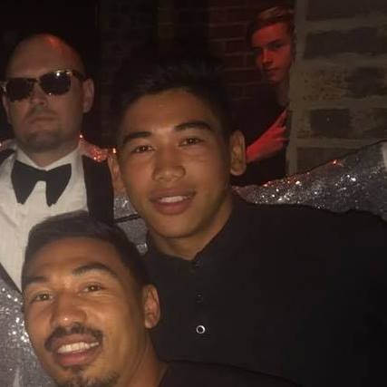

My Projects
A selection of my range of work
front-end dev
Front-end development student based out of Southwark, London, UK
The pandemic has really pushed the reset button for me and gave me the chance to reconsider life goals that motivate me. Ever since school I never considered myself academic enough to study Maths as it was a "Hard" subject that only the top students do. Well at least thats I thought in my head.
I was working as I personal training most recently in a small luxuary private gym. There was a small team of 6 personal trainers and each of us were doing 6-8, 1 hour sessions a day, 6 days a week. Then on March 16th during an evening shift the government announced full lockdown and I was put on furlough for the indefinite future.
Fast forward several months and via communications on group chat could see times were hard and the boss called me in for several meetings which ultimately lead to him letting me go with an end to furlough pay in the next couple months. This got me exploring other career paths and I worked for a friend fitting furniture in the meantime.
My brother who was previously a social worker made a career switch into coding way before the pandemic and I could see how web developers were thriving and the jobs were unaffected by the pandemic. After some research I enrolled on a e-learning platform called Scrimba were I learned basic HTML, CSS and Javascript. I'm now doing modules in more advanced Javascript and advanced React and building better projects with more interactivity, forms and better functionality overall.
All this time later i'm now getting comfortable with coding and now feel ready to do an internship or a graduate junior web developer role and continue to develop the skills to become a senior full stack developer and make the career switch. I would feel proud to make this career switch and feel becoming a software engineer is more aligned with my skill set and my literacy. I've always had a natural understanding of maths in school and I was always quick with understanding equations and mathmatical concepts but was never aware of how it translated to work in the real world. Coding has exercised that logic again for me and I enjoy tackling mathmatical logic problems and have the fortitude and perseverance to understand and solve these problem.
A selection of my range of work